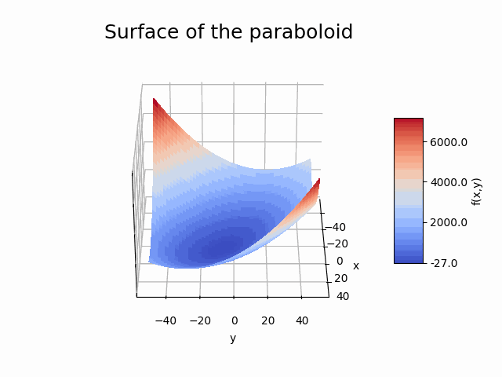

1. 简单组件分析#
 加载教程到dapta应用程序
加载教程到dapta应用程序 在Github中查看文件
在Github中查看文件{kind=link}
预计时间：10分钟
我们的第一个示例将创建和分析一个简单的解析函数组件。
开始工作所需的全部工具仅仅是一个文本编辑器和一个网页浏览器。无需下载或安装任何软件！ 然而，由于我们将在所有示例中将会使用Python，因此您需要基本了解Python语法以及安装使用支持Python的代码编辑器（例如VS Code和PyCharm等）。
1.1. 组件描述#
抛物面组件求解以下函数：
其中，x和y是组件的输入，f(x,y)是组件的输出。该函数的最小值位于
1.2. 创建组件#
单击控制面板，通过选择新建创建一个空白工作区。
在空白工作区域，单击鼠标右键并选择添加空节点，从而创建一个空模板组件。
选择该组件进行编辑。
1.2.1. 属性#
在【属性】选项卡下，可以打开组件接口。这里是您定义组件核心属性的地方。填写组件名称为paraboloid，并选择generic-python3-comp:latest作为组件的API（应用程序接口）。
按Tab键或单击组件接口内部以验证所选API。这将触发API输入文件列表的显示，如下图所示。
{kind=link}
Note
组件名称只应包括小写字母a-z，数字0-9和端横线（-），不应包含空格。
Warning
单击组件界面之外的区域会关闭组件，并且不会自动保存更改。
我们可以看到，generic-python3-compAPI有三个输入文件：
setup.pycompute.pyrequirements.txt
前两个文件是必需的，最后一个是可选的。您可以查看下面给出的关于拋物面示例的文件内容。
这里我们不需要requirements.txt文件，因为Python代码不导入任何第三方Python程序包。
我们将在下一个示例简单优化问题中使用它来导入openMDAO的类和函数。
setup.py模块必须包含一个setup（设置）函数，该函数将返回在计算函数过程中可用的数据。
这里，我们使用参数选项卡下设定的输入字典中的值初始化 x 和 y 的输入。我们同时也初始化输出和偏微分（函数梯度），该部分仅在下一个示例中需要。
compute.py模块必须包含一个 compute （计算）函数，该函数返回一个数据字典，通常包括组件输出字典。本示例中的计算函数从输入字典中存储的 x 和 y 值计算 f（x，y）。再次强调，偏微分计算仅在下一个示例中被需要。
import os
from datetime import datetime
from pathlib import Path
HOSTNAME = os.getenv("HOSTNAME")
def setup(
inputs: dict = {"design": {}, "implicit": {}, "setup": {}},
outputs: dict = {"design": {}, "implicit": {}, "setup": {}},
parameters: dict = {
"user_input_files": [],
"inputs_folder_path": "",
"outputs_folder_path": "",
},
) -> dict:
"""A user editable setup function.
Parameters
----------
inputs: dict
The component Inputs sorted by type (design, implicit or setup).
outputs: dict
The component Outputs sorted by type (design, implicit or setup).
parameters: dict
The component Parameters as defined in the component 'Parameters' tab.
Includes the following special keys:
'user_input_files': list of user-uploaded input file filenames
'inputs_folder_path': path to all user and connection input files (str)
'outputs_folder_path': path to component outputs folder (str)
Returns
-------
dict
dictionary of JSON-serialisable keys and values, including:
inputs: dict, optional
The setup function can assign values to input keys, but the inputs
keys should not be modified.
outputs: dict, optional
The setup function can assign values to output keys, but the outputs
keys should not be modified.
parameters: dict, optional
The setup function can add key/value pairs to the parameters dict,
but the existing key/value pairs cannot be modified.
partials: dict, optional
The derivatives of the component's "design" outputs with respect to its
"design" inputs, used for gradient-based design optimisation Runs.
message: str, optional
A setup message that will appear in the Run log.
"""
response = {}
# set default inputs
if inputs:
for input_key, input_value in inputs["design"].items():
if input_value == "default":
try:
inputs["design"][input_key] = float(parameters[input_key])
except Exception as e:
print(f"Could not find {input_key} in the input parameters.")
response["inputs"] = inputs
# initialise outputs - required for OpenMDAO
if outputs:
for output_key, output_value in outputs["design"].items():
if output_value == "default":
try:
outputs["design"][output_key] = float(parameters[output_key])
except Exception as e:
print(f"Could not find {output_key} in the input parameters.")
response["outputs"] = outputs
# initialise partials - required for OpenMDAO gradient-based optimisation
response["partials"] = {
"f_xy": {
"x": {"val": [0.0], "method": "exact"},
"y": {"val": [0.0], "method": "exact"},
}
}
# optional
message = f"{datetime.now().strftime('%Y%m%d-%H%M%S')}: Setup completed on host {HOSTNAME}."
response["message"] = message
return response
import os
from datetime import datetime
from pathlib import Path
HOSTNAME = os.getenv("HOSTNAME")
def compute(
inputs: dict = {"design": {}, "implicit": {}, "setup": {}},
outputs: dict = {"design": {}, "implicit": {}, "setup": {}},
partials: dict = {},
options: dict = {},
parameters: dict = {
"user_input_files": [],
"inputs_folder_path": "",
"outputs_folder_path": "",
},
) -> dict:
"""A user editable compute function.
Here the compute function evaluates the equation
f(x,y) = (x-3)^2 + xy + (y+4)^2 - 3.
with function minimum at: x = 20/3; y = -22/3
Parameters
----------
inputs: dict
The component Inputs sorted by type (design, implicit or setup).
outputs: dict
The component Outputs sorted by type (design, implicit or setup).
partials: dict, optional
The derivatives of the component's "design" outputs with respect to its
"design" inputs, used for gradient-based design optimisation Runs.
options: dict, optional
component data processing options and flags, inc. : "stream_call",
"get_outputs", "get_grads"
parameters: dict
The component Parameters as returned by the setup function.
Returns
-------
dict
dictionary of JSON-serialisable keys and values, including:
outputs: dict, optional
The compute function can assign values to output keys, but the outputs
keys should not be modified.
partials: dict, optional
The compute function can assign values to partials keys, but the
partials keys should not be modified.
message: str, optional
A compute message that will appear in the Run log.
"""
x = inputs["design"]["x"]
y = inputs["design"]["y"]
outputs["design"]["f_xy"] = (x - 3.0) ** 2 + x * y + (y + 4.0) ** 2 - 3.0
resp = {}
resp["outputs"] = outputs
if options["get_grads"]:
partials["f_xy"]["x"]["val"] = [2 * (x - 3.0) + y]
partials["f_xy"]["y"]["val"] = [x + 2 * (y + 4.0)]
resp["partials"] = partials
message = f"{datetime.now().strftime('%Y%m%d-%H%M%S')}: Compute paraboloid f(x:{str(x)},y:{str(y)}) = {str(outputs['design']['f_xy'])} on host {HOSTNAME}"
resp["message"] = message
return resp
对于以上每个文件，将其内容复制到文本编辑器中并保存在本地设备。确保在文件名中包括'.py'扩展名。
接下来，在组件界面中选择setup.py以上传相应的文件。应该会出现一个绿色的勾号和一个文件上传的时间戳，以确认上传成功。重复以上步骤上传compute.py文件。
勾选开始节点和结束节点选项旁边的复选框（因为在此运行中我们只有一个组件），如下图所示。

最后，选择保存数据以保存组件并关闭组件界面。
在您的工作区中，组件名称应该也已更新，并且将出现绿色勾号，以表示该组件是有效的。 但是，如果您现在尝试运行它，您将会收到报错消息， 因为我们实际上尚未定义Python函数的参数和输入 - 请参见下文。
Warning
尽管您刚刚保存了组件，但您工作区的内容实际上并没有保存在任何地方，如果您现在刷新网页或关闭浏览器，您将会丢失您的作业信息。为避免这种情况，您应该定期保存已编辑的组件，然后选择工作区下载按钮，保存您会话的JSON格式版本（请参见用户手册中的相关部分）。
1.2.2. 参数#
请再次选择要编辑的组件，然后选择参数选项卡并将以下 JSON 对象复制到文本框中。选择保存数据以保存编辑。
{
"x": 5,
"y": 5,
"f_xy": 0
}
我们将参数定义为组件执行所需的值，但它们不是来自其他组件的输入。 例如，参数可以是常量值或与应用程序相关的输入文件。对于这个抛物面示例， 我们使用参数选项卡定义了一些默认的组件输入和输出值，这些值用于在设置函数中初始化组件。 要更全面地使用参数，请参见示例链接组件分析。
1.2.3. 输入与输出#
打开组件以编辑它，并将以下 JSON 对象添加到输入和输出选项卡中的文本框中。
通过将抛物面函数的输入和输出分别定义为组件的输入和输出，
我们可以将这些值暴露给其他运行组件，例如驱动程序。
我们将在下一个教程示例简单优化问题中探讨这个问题。
输入句柄:
{
"x": "default",
"y": "default"
}
输出句柄：
{
"f_xy": "default"
}
我们将在下一节中讨论日志选项卡。
选择保存数据以保存组件并关闭它。现在，您应该能够在工作区组件的左侧和右侧看到一些输入和输出句柄。将鼠标光标悬停在句柄上以查看变量名称。
1.3. 组件分析#
如果一切顺利，您现在应该能够通过在运行控件界面中选择运行符号 ▶ 来启动运行。 运行符号 ▶ 将开始闪烁当您的运行被发送到云端进行分析， 这可能需要几分钟时间（如果是第一次运行）。最终，运行应该会被执行（这将非常快）， 并且您应该会看到一个警示窗口，确认【运行已成功完成】。如果您没有收到任何消息， 请尝试刷新您的网络浏览器页面， 或查阅常见问题解答部分以获得故障排除建议。
现在我们可以检查运行的输出。
1.3.1. 运行日志#
在界面控件中选择查看日志来查看以嵌套的 JSON 文本对象给出的运行总结，如下图所示。
'time'(时间)条目对应于生成运行日志文件的时间，而出现在'run_output'和'paraboloid' 'message'中的时间戳与抛物面计算函数的执行时间有关。抛物面组件的输入和输出可在相应的'paraboloid'条目下找到。
要保存运行日志的副本，请选择关闭以返回工作区视图，然后选择下载。
这应该会下载两个 JSON 文件：运行日志为'runlog.json'，工作会话的副本为'dapta_input.json'。
{kind=link}
1.3.2. 组件日志#
请重新选择组件并导航到如下图所示的日志选项卡。
运行日志和组件日志都会在运行时更新，这使得我们能够监察进度并查看中间结果。
组件日志按发生时间顺序列出与组件相关的事件。 'SETUP'事件对应于执行组件的设置函数，
'COMPUTE'事件对应于在setup.py和compute.py模块中定义的计算函数。
事件名称后跟着一个数字，表示当前运行期间执行该组件的次数。请注意，
组件日志在连续运行之间不会清除，但如果您刷新页面，它将会被清除。
组件日志还有另一个重要的功能：如果在组件执行过程中发生错误， 则日志将列出一个带有错误消息和回溯信息描述的'ERROR'事件。
日志选项卡还包括一个下载文件快照链接。选择此选项以下载一个zip文件，
其中包含您工作区中此组件的所有输入和输出文件的当前版本。
将此数据与您会话的JSON格式版本（'dapta_input.json'）和运行日志的副本（'runlog.json'）一起保存，以便您将来重新加载此示例，或者与其他运行比较输入和输出。

1.4. 编辑运行#
一旦您成功启动了一次运行，会话和所有相关数据将被保存在云端，直到您决定覆盖或删除它们。
只有在停止运行（使用停止符号 ⏹）或成功完成运行后，才能进行编辑。 第二次启动运行时，它将执行得更快，因为进程已经在云端设置好了， 除非您重命名、添加或删除组件。在这种情况下，现有的运行需要首先被删除。 可以通过编辑拋物面组件参数中的x和y值，然后重新启动运行来尝试此操作。
1.5. 清理#
您可以通过创建新会话（从界面控件中选择新建）或从计算机加载JSON会话文件（选择打开）来删除会话，可能需要一分钟左右在云端重置会话。
1.6. 参考文献#
'Paraboloid - A Single-Discipline Model' example from the openMDAO user guide.